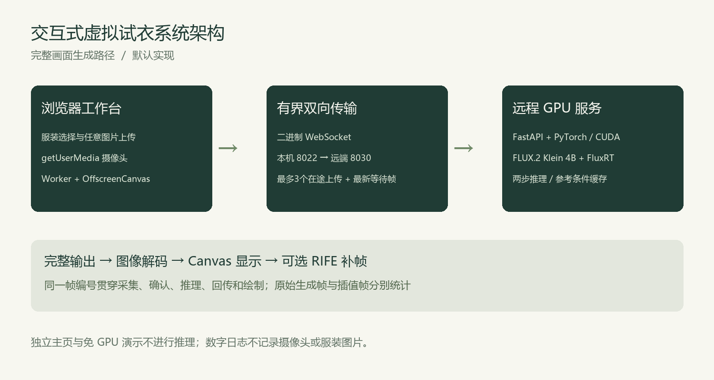
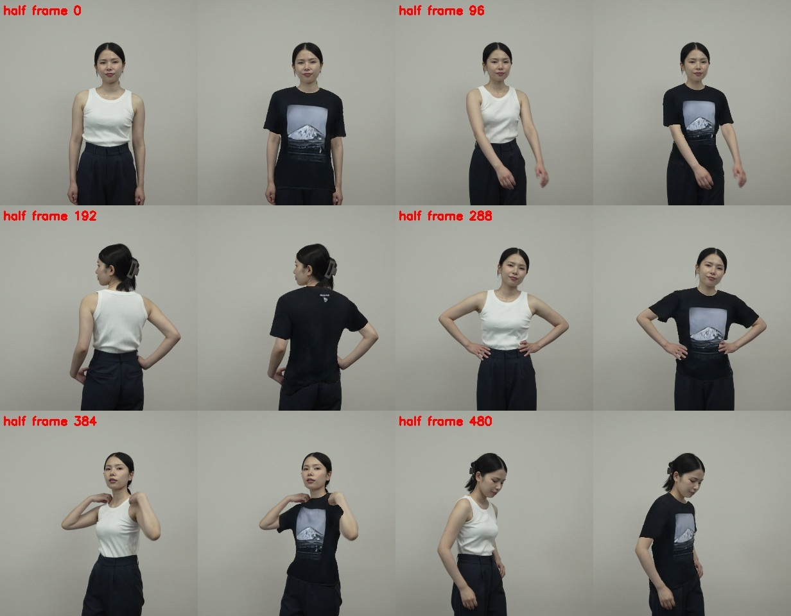

衣见 / LIVE VTON · 本科毕业设计答辩
基于深度学习的
交互式虚拟试衣系统
设计与实现
从任意服装图片，到可测量的摄像头试衣流程。
学生姓名、专业、学号、指导教师：请在正式答辩前补齐
01 / MOTIVATION
单张图片好看，还不够。
试穿需求
服装商品图难以直接展示在具体人物身上的视觉效果。
交互难点
相机持续变化，需要同时控制生成质量、动作跟随与延迟。
研究目标
搭建可用系统，保留任意图片输入，建立可追溯的评价机制。
02 / REQUIREMENTS
把需求落到可验收的操作。
- 浏览样衣，并上传任意服装参考图片。
- 支持半身入镜，展示完整生成画面。
- 区分本地相机、合成演示和真实AI输出。
- 可导出数字诊断，并在服务不可用时保留本地功能。
范围：单用户研究原型；不包含电商支付、尺寸测量与布料物理仿真。
03 / ARCHITECTURE
浏览器采集，远程GPU生成。

04 / GENERATION
完整生成，与关键点贴图的区别。
默认路径
人物帧与服装参考共同引导完整图像编辑，模型尝试重新生成褶皱、边缘与遮挡。
保留的边界
没有真实布料物理与可靠背面记忆；单张正面图无法保证还原未知背面。
模型来源：Black Forest Labs FLUX.2 Klein；推理框架：tensorforger/FluxRT。基础模型并非本项目自行训练。
05 / ENGINEERING
把时间花在最新一帧上。
采集与编码
VideoFrame、Worker与OffscreenCanvas，减少主线程阻塞。
有界帧调度
最多3个在途上传，只保留最新等待输入，发送缓冲达到阈值时背压。
显示与资源
跳过重复相机帧，后台停止渲染与生成，区分原帧与补帧。
06 / DEMONSTRATION
现场演示：先确认画面来源。
- 主页介绍与进入工作台。
- 内置衣柜与自定义服装上传。
- 摄像头启停、服务状态与操作帮助。
- GPU可用时展示真实生成，否则使用免GPU交互演示。
- 查看阶段日志与主动保存结果。
打开免GPU演示 ↗ 打开真实AI工作台 ↗
07 / HISTORICAL HUMAN TEST
历史实测：功能可用，流畅度仍不足。
GPU推理中位数约122.25 ms；逐帧剩余项约303.67 ms，包含传输、缓冲与调度。
2026-10-26，320×320，低延迟，30原帧；trace d5e1b52a。阶段中位数不可相加；本轮无GPU，未产生新真人成绩。
08 / FIXED GARMENT COMPARISON
固定样衣实验，不替代通用上传。
| 输入 | 完整处理P50 | 吞吐 |
|---|
| 完整人物 | 109.95 ms | 8.74 FPS |
| 半身裁切 | 122.91 ms | 8.11 FPS |
依赖逐衣训练；尚未验证连续真人时序；整体耗时不等于生成器8.6 ms。

2026-10-26，官方公开视频各24个抽样帧，预热3帧；不包含浏览器采集、网络和显示。RTV源码与权重来源见论文。
09 / VALIDATION
把功能正确与体验改善分开验证。
本地可验证
主页不加载推理引擎；离线演示无GPU请求；上传与相机可用；旧会话取消；重复帧和后台停止；窄屏布局。
资源恢复后复测
同人物、同动作、同网络，比较原帧FPS、延迟P50/P95、动作跟随与转身图案一致性。
自动化测试为模拟协议和浏览器功能验证，不能代替真实模型视觉验收；实际通过数量见随附验证报告。
10 / LIMITATIONS AND NEXT STEPS
尚未解决的问题，也是下一步方向。
- 逐帧生成速度不足：评估具备服装条件和时序记忆的生成路线。
- 传输与调度长尾：用二进制回显和同源对照拆分剩余项。
- 正背面不一致：研究多视图参考与稳定朝向约束。
- 样本有限：增加受控动作、多衣服与多网络的重复实验。
目标：原生至少15 FPS、端到端P95≤300 ms；属于未来验收目标，当前未达到。
衣见 / LIVE VTON
完成一条可用链路，
也留下可核查的证据。
已完成：系统原型、任意服装图片输入、完整生成接入、调度优化与逐帧诊断。
仍需完成：GPU恢复后的真人复测与时序一致性改进。
感谢各位老师，欢迎批评指正。